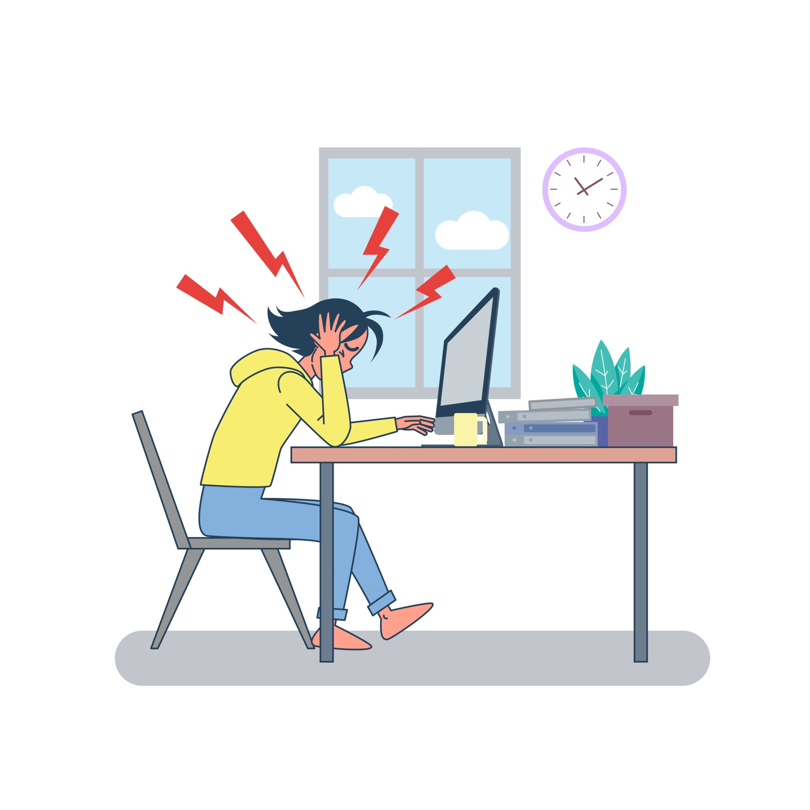
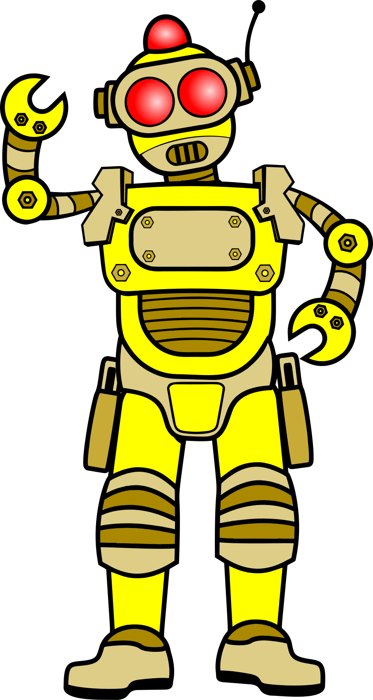
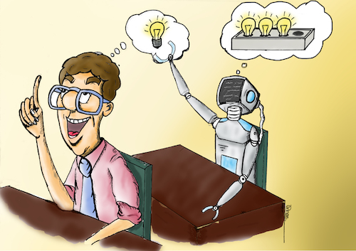

1. ¿Qué es el pensamiento computacional?
 .
.
Para poder cumplir con el reto de este proyecto, necesitas aprender algunas cosas nuevas.
¿Alguna vez te has preguntado qué es el pensamiento computacional?
¿Para qué crees que puede servir?
Observar la siguientes imágenes y di cuál o cuáles podrían representar mejor este término.




El pensamiento computacional es...
El pensamiento computacional es comprender cómo una computadora «piensa» y cómo debes trabajar con ella para que haga lo que tú le pides. Este proceso permite formular o resolver problemas del mundo que nos rodea de un modo lógico y paso a paso.